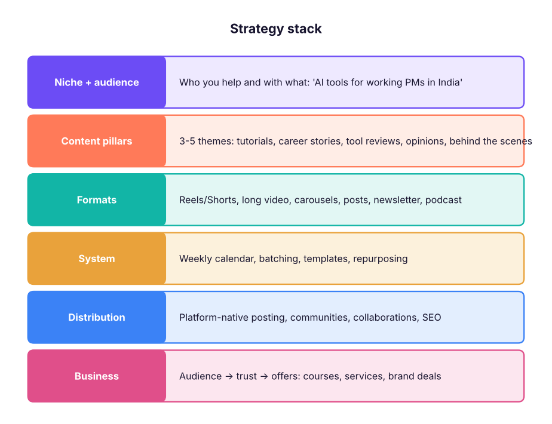

Content Creation Complete Guide: Strategy, Writing, Short and Long Video, Design, AI Tools, Distribution and Monetisation
A complete guide for creators, marketers and professionals building a personal or brand presence. Find your niche and content pillars, write hooks, scripts, LinkedIn posts, threads and blogs, shoot and edit short and long video, design thumbnails and carousels, use AI tools responsibly, publish on a system, grow on Instagram, YouTube and LinkedIn, measure what works, and monetise through brand deals, products, courses and services.
- Define a niche, audience and content pillars, and plan a sustainable calendar
- Write hooks, scripts, posts and long-form articles that people finish
- Produce short and long videos, thumbnails and carousels with free tools
- Use AI tools in an honest, efficient workflow
- Measure performance and build income streams as a creator
Start with strategy

Niche formula: who + problem + your angle. Examples: "Excel and Power BI tips for finance freshers in Hindi", "Product case studies explained in 60 seconds", "Honest reviews of AI tools for small businesses".
Writing that people finish
Hooks
| Hook type | Example |
|---|---|
| Result | "This one prompt saves me 5 hours a week." |
| Mistake | "Stop using VLOOKUP. Use this instead." |
| Curiosity | "The PM interview question 90% of candidates get wrong" |
| Story | "I failed 11 interviews. Here's what changed on the 12th." |
| Contrarian | "You don't need a data science degree to work in AI." |
| List | "5 free tools I use every day as a PM" |
Structures
- Short video script (30–60 s): hook (0–3 s) → context (why it matters) → 3 steps or points → payoff → CTA (follow, comment a keyword, save).
- LinkedIn post: hook line → 1-line story or problem → 3–5 short points → lesson → question to readers. Use white space, no walls of text.
- Long-form article / blog: search-intent title → summary at the top → sections with examples → FAQ → CTA.
- Newsletter: one big idea, one tool, one link, one question.
import re
post = """I failed 11 product interviews.
Then I changed one thing: I started every answer with the user, not the feature.
Here is the framework I use now:
1. Who is the user and what is their goal?
2. What is painful today?
3. What would success look like in numbers?
The 12th interview became my offer.
What changed your interviews?"""
words = len(re.findall(r"\w+", post)); lines = post.count("\n") + 1
print(f"{words} words, {lines} lines, hook = '{post.splitlines()[0]}' ({len(post.splitlines()[0])} characters)")
print(f"approx. reading time {words / 230 * 60:.0f} seconds")60 words, 8 lines, hook = 'I failed 11 product interviews.' (31 characters) approx. reading time 16 seconds
Video: short and long
| Short (Reels, Shorts) | Long (YouTube) | |
|---|---|---|
| Length | 15–60 s (up to 3 min where allowed) | 8–20 min |
| Goal | Reach and discovery | Trust, depth, search traffic |
| Key metric | Watch time / replays, shares, saves | Click-through rate on thumbnail, average view duration, returning viewers |
| Structure | Hook in 1–3 s, fast cuts, captions | Promise in first 30 s, chapters, payoff |
Gear for beginners: a phone, natural window light or a ring light, a clip-on wireless mic (sound matters more than video), a tripod and a clean background.
Editing: CapCut (free, auto-captions, templates), VN, DaVinci Resolve (free, pro), Descript (edit video by editing the transcript), Canva video. Add captions (most viewers watch muted), jump cuts, B-roll and on-screen text.
Design: thumbnails and carousels
- Thumbnails: one face with clear emotion, 3–5 words maximum, high contrast, readable on a phone; test two versions (YouTube's Test & Compare).
- Carousels (LinkedIn PDF, Instagram): slide 1 is the hook, one idea per slide, consistent template, last slide summary + CTA.
- Tools: Canva (templates, brand kit, Magic Studio), Figma (custom templates), Adobe Express.
AI tools for creators
| Stage | Tools | Use it for |
|---|---|---|
| Ideas and research | Claude, ChatGPT, Gemini, Perplexity, NotebookLM | Topic lists, outlines, summarising sources, audience questions |
| Writing | Claude, ChatGPT | First drafts in your voice (give 3 of your best posts as examples), editing for clarity |
| Visuals | Canva Magic Studio, Adobe Firefly, Midjourney, Ideogram | Thumbnails, backgrounds, illustrations |
| Video | CapCut, Descript, Opus Clip (clip long videos into shorts), HeyGen/Synthesia (avatars) | Editing, captions, repurposing |
| Voice and audio | ElevenLabs, Adobe Podcast Enhance | Voice-overs, cleaning audio, dubbing into Hindi and other languages |
| Workflow | Notion, n8n/Make/Zapier | Calendar, idea bank, auto-posting and repurposing pipelines |
Fact-check AI output, add your own experience (that is what audiences follow you for), label AI avatars and synthetic voices, use licensed music and images, and never clone someone's voice or likeness without consent.
A weekly content system
week = {"Mon": "Batch-write 3 posts + 2 scripts (2 h)", "Tue": "Record 3 shorts + 1 long video (3 h)", "Wed": "Edit long video; design 1 carousel (3 h)",
"Thu": "Publish long video; cut 3 shorts from it", "Fri": "Newsletter + reply to comments and DMs (1 h)", "Sat": "Review analytics; plan next week (1 h)"}
for d, t in week.items(): print(f"{d}: {t}")Mon: Batch-write 3 posts + 2 scripts (2 h) Tue: Record 3 shorts + 1 long video (3 h) Wed: Edit long video; design 1 carousel (3 h) Thu: Publish long video; cut 3 shorts from it Fri: Newsletter + reply to comments and DMs (1 h) Sat: Review analytics; plan next week (1 h)
Repurposing: one long video → 3–5 shorts → 1 carousel → 1 LinkedIn post → 1 newsletter section → 1 blog post.
Growth on each platform
| Platform | What works |
|---|---|
| Reels for reach, carousels for saves, Stories for community, collabs | |
| YouTube | Searchable titles, strong thumbnails, series and playlists, Shorts that point to long videos |
| Consistent posting, personal stories with lessons, carousels, thoughtful comments on others' posts | |
| X | Threads, quick takes, engaging with your niche |
| Newsletter (Substack, beehiiv, LinkedIn newsletters) | Owned audience you can reach directly |
Post consistently (quality first), reply to every comment early on, collaborate with creators in adjacent niches, and study your top 10% of posts to make more like them.
Measure what matters
posts = [("Excel tip reel", 52000, 2100, 3400, 180), ("PM story post", 18000, 640, 220, 95), ("AI tool carousel", 26000, 900, 1800, 140)]
print(f"{'post':18s}{'views':>8s}{'eng. rate':>10s}{'saves/1k':>9s}{'follows':>8s}")
for name, views, likes, saves, follows in posts:
print(f"{name:18s}{views:8,d}{(likes + saves) / views:10.1%}{saves / views * 1000:9.0f}{follows:8d}")post views eng. rate saves/1k follows Excel tip reel 52,000 10.6% 65 180 PM story post 18,000 4.8% 12 95 AI tool carousel 26,000 10.4% 69 140
Track: reach/views, watch time or average view duration, engagement rate, saves and shares (strong signals), follower conversion, clicks to your link, and revenue per follower over time.
Monetisation
| Stream | Notes |
|---|---|
| Brand partnerships | Media kit with audience data; disclose paid posts (ASCI) |
| Platform payouts | YouTube Partner Program; bonuses where available |
| Affiliate marketing | Amazon Associates, tool affiliate programs; disclose links |
| Digital products | Templates, Notion kits, e-books, presets |
| Courses and cohorts | Your expertise packaged; live cohorts sell well in India |
| Services and consulting | Freelance writing, editing, strategy, workshops for companies |
| Community and memberships | Paid groups, YouTube memberships, Patreon |
Taxes and admin: track income, GST registration above the threshold for services, and contracts for brand deals (deliverables, usage rights, payment terms).
Capstone: 30-day launch
- Niche statement, 3 pillars and 30 ideas (use AI for the list, choose with your own judgement).
- Templates: one script template, one carousel template, one thumbnail style.
- Publish 12 shorts, 4 carousels, 2 long videos, 4 LinkedIn posts and 4 newsletters with repurposing.
- Weekly review of the metrics table; double down on the top format.
- Build a one-page media kit and one low-priced digital product.
Summary
- Niche + pillars + formats + system + distribution + business is the creator strategy stack.
- Hooks and structure decide whether people stay; captions and sound decide whether video works.
- Repurpose one long piece into many short ones; post consistently and study your best work.
- Use AI to speed up research, drafts and editing, with honesty and rights respected.
- Monetise through brand deals, affiliates, products, courses and services.
1. What is the most important part of a short video?
2. Which signal usually shows the content was valuable enough to keep?
3. What should you do when using an AI avatar or cloned voice?
4. What is repurposing?
5. Which metric matters most for YouTube long videos?
6. What must paid brand posts include in India?
Pick a niche and write: a niche statement, 3 pillars, 10 hooks (2 of each type), one 45-second script, one LinkedIn post and a 6-slide carousel outline. Then record and publish one short video and report its metrics after 48 hours.
Show solution
Check that each hook promises a specific result or tension, the script follows hook → context → 3 points → payoff → CTA, and the post has short lines, a lesson and a question. Metrics should include views, average watch time or completion, saves, shares and follows.
Q: How would you grow a brand's LinkedIn presence? Founder- and employee-led posts with stories and lessons, a consistent weekly cadence, carousels and short videos, engaging with relevant creators, employee advocacy, and measuring follower growth, engagement and inbound leads.
Q: How do you decide what content to make next? Audience questions (comments, DMs, search data), top-performing past posts, competitor gaps, and the business goal for the month.
Q: Short-form or long-form? Short builds reach and discovery; long builds trust and depth; most creators use short to bring people to long and to owned channels like newsletters.
Q: How do you use AI without sounding generic? Feed it your own examples and voice, use it for structure and editing, add personal stories and data, and always edit the final version yourself.
Q: How do you price a brand deal? Based on average views/reach, engagement, niche value, deliverables, usage rights and exclusivity, with a media kit and a written agreement.
Learn more
Practise more online
Free, trusted places to test yourself on this topic. Links open the original site in a new tab.